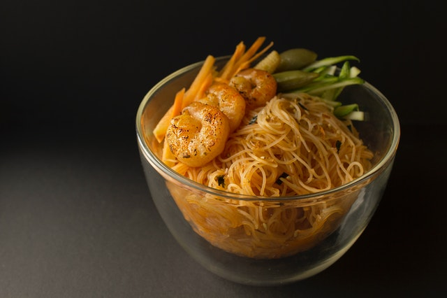

Shanghai spring onion oil noodles

Preparation time: 12 minutes
Ingredients:
- 4 tbsp cooking oil
- 5 stalk spring onion, cut into long sections
- 2 tbsp light soy sauce
- 2 tbsp dark soy sauce
- 2 tsp sugar
- 400 g dried thin, round noodles
Instructions:
- Pour oil in a wok. Add spring onion. Leave to simmer over a medium low heat until it starts to
brown.
Take the onion out
and set aside (see note).
- Add soy sauce and sugar to the oil. Cook until the sauce starts to bubble. Turn off the heat.
- Meanwhile, bring a large pot of water to a boil. Cook noodles following the instructions on the
package.
Drain then
briefly rinse under running water.
- Place noodles in the wok. Stir well to evenly coat the noodles with the sauce.
- Portion out the noodles into 4 serving bowls. Top with fried spring onion.